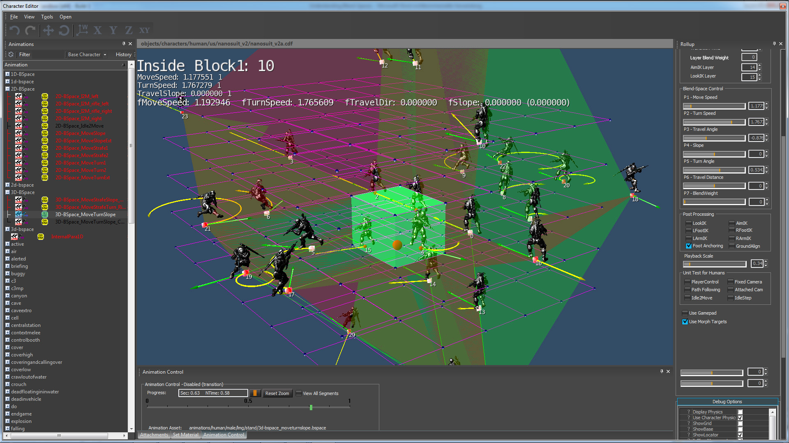

3D-Blend Spaces Overview
All the concepts we learned about 1D and 2D apply to 3D blend-spaces as well. There is nothing special about 3D blend-spaces, except the fact that we have an additional dimension.
The only issue we have with 3D and higher dimensions, is that it starts to get harder to visualize and debug.
Sections
3D-BSpace_MoveTurnSlope.bspace
One application for 3d is to put move-speed on X, turn-speed on Y, and slope-angle on Z. You can see in which direction this is going: each new control-parameter is actually a new dimension in the Blend-Space. In 3D we can control uphill/downhill motion and we can combine this with all different speeds and turn-angles.

<ParaGroup>
<Dimensions>
<Param name="MoveSpeed" min="+0.2" max="+9.5" cells="7"/>
<Param name="TurnSpeed" min="-3.8" max="+3.8" cells="7"/>
<Param name="TravelSlope" min="-0.5" max="+0.5" scale="4.4" cells="5"/>
</Dimensions>
<ExampleList>
<Example AName="stand_tac_walk_rifle_fwd_slow_3p_01" />
<Example AName="stand_tac_run_rifle_fwd_slow_3p_01" />
<Example AName="stand_tac_run_rifle_fwd_fast_3p_01" />
<Example AName="stand_tac_sprint_rifle_fwd_3p_01" />
<Example AName="stand_tac_walkTurn_rifle_lft_slow_3p_01"/> //turn
<Example AName="stand_tac_runTurn_rifle_lft_slow_3p_01" /> //turn
<Example AName="stand_tac_runTurn_rifle_lft_fast_3p_01" /> //turn
<Example AName="stand_tac_walkTurn_rifle_rgt_slow_3p_01"/> //turn
<Example AName="stand_tac_runTurn_rifle_rgt_slow_3p_01" /> //turn
<Example AName="stand_tac_runTurn_rifle_rgt_fast_3p_01" /> //turn
<Example AName="stand_tac_walkUp_rifle_fwd_slow_3p_01" /> //slope
<Example AName="stand_tac_runUp_rifle_fwd_slow_3p_01" /> //slope
<Example AName="stand_tac_runUp_rifle_fwd_fast_3p_01" /> //slope
<Example AName="stand_tac_walkDown_rifle_fwd_slow_3p_01" /> //slope
<Example AName="stand_tac_runDown_rifle_fwd_slow_3p_01" /> //slope
<Example AName="stand_tac_runDown_rifle_fwd_fast_3p_01" /> //slope
</ExampleList>
<ExamplePseudo>
<Pseudo p0="1" p1="0" w0="-1.0" w1="2.0" />
<Pseudo p0="0" p1="4" w0="-2.0" w1="3.0" />
<Pseudo p0="0" p1="7" w0="-2.0" w1="3.0" />
<Pseudo p0="1" p1="5" w0="-1.0" w1="2.0" />
<Pseudo p0="1" p1="8" w0="-1.0" w1="2.0" />
<Pseudo p0="2" p1="6" w0="-1.0" w1="2.0" />
<Pseudo p0="2" p1="9" w0="-1.0" w1="2.0" />
<Pseudo p0="2" p1="3" w0="-2.0" w1="3.0" />
<Pseudo p0="0" p1="10" w0="-2.0" w1="3.0" />
<Pseudo p0="1" p1="11" w0="-0.8" w1="1.8" />
<Pseudo p0="2" p1="12" w0="-0.8" w1="1.8" />
<Pseudo p0="0" p1="13" w0="-1.6" w1="2.6" />
<Pseudo p0="1" p1="14" w0="-1.6" w1="2.6" />
<Pseudo p0="2" p1="15" w0="-1.8" w1="2.8" />
</ExamplePseudo>
<Blendable>
//volumes facing up
<Face p0="0" p1="17" p2="16" p3="24" /> //tetrahedron
<Face p0="0" p1="16" p2="18" p3="24" /> //tetrahedron
<Face p0="1" p1="19" p2="17" p3="0" p4="25" p5="24"/> //prism
<Face p0="0" p1="18" p2="20" p3="1" p4="24" p5="25"/> //prism
<Face p0="2" p1="21" p2="19" p3="1" p4="26" p5="25"/> //prism
<Face p0="1" p1="20" p2="22" p3="2" p4="25" p5="26"/> //prism
<Face p0="2" p1="23" p2="21" p3="26" />
<Face p0="2" p1="22" p2="23" p3="26" />
//volumes facing down
<Face p2="0" p1="17" p0="16" p3="27" /> //tetrahedron
<Face p2="0" p1="16" p0="18" p3="27" /> //tetrahedron
<Face p3="1" p2="19" p1="17" p0="0" p4="27" p5="28"/> //prism
<Face p3="0" p2="18" p1="20" p0="1" p4="28" p5="27"/> //prism
<Face p3="2" p2="21" p1="19" p0="1" p4="28" p5="29"/> //prism
<Face p3="1" p2="20" p1="22" p0="2" p4="29" p5="28"/> //prism
<Face p2="2" p1="23" p0="21" p3="29" /> //tetrahedron
<Face p2="2" p1="22" p0="23" p3="29" /> //tetrahedron
</Blendable>
</ParaGroup>3D blend spaces look scary and confusing the first time you look at them, but they are manageable if you follow a certain structure. The base setup to this is similar to 2D-BSpace_MoveTurn2.bspace. Just compare the first ten entries in the <ExampleList> and the first eight entries in <ExamplePseudo>. The only difference is that we also added 6 slope assets. To annotate a 3D blend-space we use volumes like tetrahedrons, pyramids and prisms.
Each volume has a ground plane (3-4 points) and a tip (1-2 points). If the tip points up, the vertices on the ground plane must be annotated counter clockwise. If the tip points down, the vertices on the ground plane must be annotated clockwise.
3D-BSpace_MoveTurnSlope_Combination.comb
3D blend spaces are more difficult to debug, even with a very structured design. Fortunately, many higher dimensional blends are a combination of simple lower-dimensional blends. This relationship makes it possible to combine two 2D spaces into a 3D space and two 3D spaces into a 4D space. These are simple linear combinations. We want to show how to recreate the previous "3D-BSpace_MoveTurnSlope.bspace" with a simple combination of 2D blend-spaces. This is also a good example to show another application of the *.COMB file.
We slightly modified the 2D "MoveSlope" and "MoveTurn" blend-spaces. Take a look at these files:
2D-BSpace_MoveSlopeExt.bspace2D-BSpace_MoveTurnExt.bspace
In the slope example we change the scope to allow a very big and almost unnatural extrapolation of the slope assets.
<Dimensions>
<Param name="MoveSpeed" min="+0.2" max="+9.5" cells="17"/>
<Param name="TravelSlope" min="-1.0" max="+1.0" scale="4.4" cells="37"/>
</Dimensions> We did the same in the turn example, where we allowed an extreme turn-speed value.
<Dimensions>
<Param name="MoveSpeed" min="+0.2" max="+9.5" cells="19"/>
<Param name="TurnSpeed" min="-6.30" max="+6.30" cells="39"/>
</Dimensions> The file "3D-BSpace_MoveTurnSlope_Combination.comb" combines both blend-spaces by scaling the parameters "MoveSpeed" and "TurnSpeed" by 2 and then doing a 50%-50% blend with the result of both blend-spaces. The result is a new blend-space where you can control all 3 features independently. This is a practical example how to linearly combine blend-spaces and combine its features.
<CombinedBlendSpace>
<Dimensions>
<Param name="MoveSpeed" />
<Param name="TurnSpeed" ParaScale="2.0" />
<Param name="TravelSlope" ParaScale="2.0" />
</Dimensions>
<BlendSpaces>
<BlendSpace AName="animations/human/male/lmg/stand/2D-BSpace_MoveSlopeExt.bspace" />
<BlendSpace AName="animations/human/male/lmg/stand/2D-BSpace_MoveTurnExt.bspace" />
</BlendSpaces>
</CombinedBlendSpace>The same concept works with higher dimensions as well. For C3 we took two 3D blend-spaces and combined them into a 4D blend-space. That was just a proof of concept of how far we can push it with blend-space algebra.